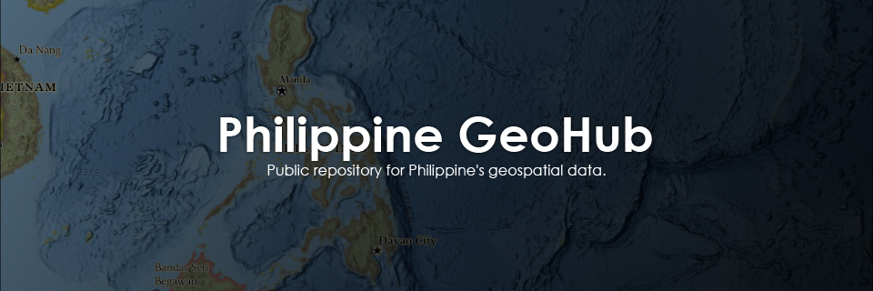

Home

Philippine GeoHub is a free and unofficial public site for exploring and downloading high-resolution geographic information system data for the Philippines. You can use these geospatial data for research, visualizations, or applications. This geohub supports modeling and data analysis for quality research and education.
This portal is dedicated to provide free and open geospatial information resources that are both credible and reliable. All data on this database is dedicated to help researchers and stakeholders to discover, preview and access geospatial data in the Philippines. Philippine GeoHub aims to allow collaboration among parties and information for interoperability regardless of the technical diversity of data consumers.
Every spatial data on this database were properly cited from where they were sourced and maintained. In this regard, and in compliance with the Creative Commons framework, please properly cite every data that will be sourced in this hub.
You can explore and download geospatial data on this page. If you have some questions, requests, error reports, collaborations, and specially contributions please contact me.
!!! NEXT PATCH ON SEPTEMBER 2021 !!!
Set of changes to fix, update or improve this page will be done quarterly except if there are some critical issues. If you have a request or major concern feel free to reach out.
Download
Boundaries
This section includes the administrative boundaries of the Philippines at different levels: level 0 — country level, level 1 — region level, level 2 — province level, level 3 — munipality/city level, and level 4 — barangay level.

Climate
This section includes climatic conditions of the Philippines with historical, current, and future projections based on surface temperature and precipitation.
Ecological
This section includes ecological boundaries within the Philippines such as sanctuaries, protected areas, and key biodiversity areas.
Basemaps
this section includes basemaps based on OpenStreetMap data extracts such as infrastructures, travel and transportation, parks, and waterways.
About
This datahub was independently created and managed by John Paul Payopay, intended to collect and provide free geospatial data for the Philippines to be used in research and education. I am an independent landscape and conservation ecologist committed to research- and science-based biodiversity and ecosystem management plans for protection and rehabilitation. My interests and current projects are focused on spatial and ecological modeling, community structures, and climate response of biodiversity in Northern Luzon, Philippines.
I welcome everyone who intends to collaborate or contribute to Philippine GeoHub or external research opportunities. Please do contact if you have some interests or concerns.
This datahub will do updates and maintenance semiannually except is there are some critical errors or missing files. Please report immediately if you found any issues.
You can check out the references and resources of this page here.
Contact